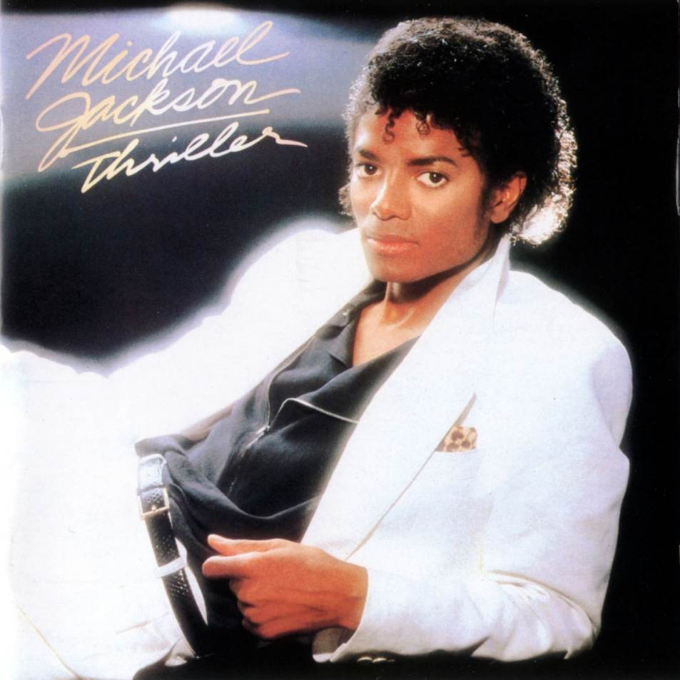

Thriller es el nombre del sexto álbum de estudio del artista estadounidense Michael Jackson. Fue lanzado al mercado el 30 de noviembre de 1982 por Epic Records después del exitoso y aclamado álbum de Jackson Off the Wall de 1979. Incluye géneros similares a los de Off the Wall, incluyendo la música post-disco, el R&B, el pop y el rock.
